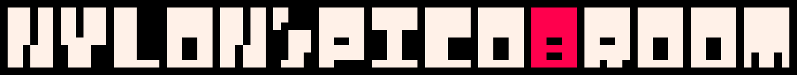

Rabbit Bloom : ジャンプアクション
ウサギが花の上をジャンプして、
より高いところを目指して、
登っていくゲームです。
制作時期 : 2022年12月 (5日間)
FARM PANIC : 防衛アクション
カブを引っこ抜いたり、
モグラに食べられないように発射したりして、
ハイスコアを目指すゲームです。
制作時期 : 2022年1月 (3日間)
Roll Panda : 転がりアクション
パンダを転がしたり、
ジャンプしたりして、
ゴールを目指すゲームです。
制作時期 : 2021年6月-7月 (2ヵ月)
BOMBTANK2 : 探索アクション
爆弾を置いて敵をおびき寄せて倒しながら、
迷路のようなステージを探索して、
ゴールを目指すゲームです。
制作時期 : 2021年2月-3月 (2ヵ月)
SHIP 'n GRAVITY : 重力シューティング・ゲームジャム「宇宙」
重力の影響を受けながら惑星の間を進み、
敵を倒してハイスコアを目指すゲームです。
制作時期 : 2021年2月 (3日間)
RUMBLE RUN-BULL : 暴走アクション・ゲームジャム「かける」
農場を牛が爆走して樽を破壊して、
ハイスコアを目指すゲームです。
制作時期 : 2021年1月 (1週間)
SPACETUBE : 奥スクロールSTG
奥から飛んでくる惑星をショットで壊して、
チューブ状の空間を進み、
ハイスコアを目指すゲームです。
制作時期 : 2020年6月 (2週間)
Monkeye drops : ミニゲーム・ゲームジャム「ことわざ」
2階からサルが目薬をさしてあげるゲームです。
人をほんとは川に流される河童にしたかったのですが、
要素が多くてごちゃついたのでやめました。
制作時期 : 2022年8月 (3日間)
月とすっぽん : カジュアル・ゲームジャム「ことわざ」
落ちてくる月とすっぽんをカゴに仕分けるゲームです。
ワンボタンで遊べます。
40を超えると凄いです。
制作時期 : 2022年8月 (5時間)